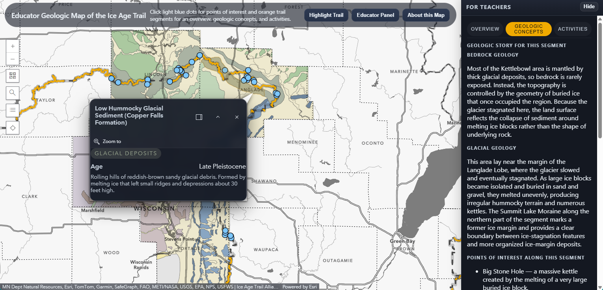

Ice Age Trail Educator Map
Capstone project for my MS in Cartography & GIS: an educator-focused interactive geologic map designed to support place-based learning along Wisconsin’s Ice Age Trail. The application connects trail segments to glacial and bedrock geology, points of interest, and teaching-ready interpretive content.
I designed the map experience with a user-centered workflow in mind, emphasizing clear visual hierarchy, accessible design choices, and a narrative structure that helps non-specialists understand geologic context. The final product integrates interactive map exploration with supporting information that translates geologic data into classroom-friendly language.
Skills: ArcGIS Pro/Online, StoryMaps, web cartographic design, UI/UX for education, interactive mapping, geologic interpretation, visual storytelling